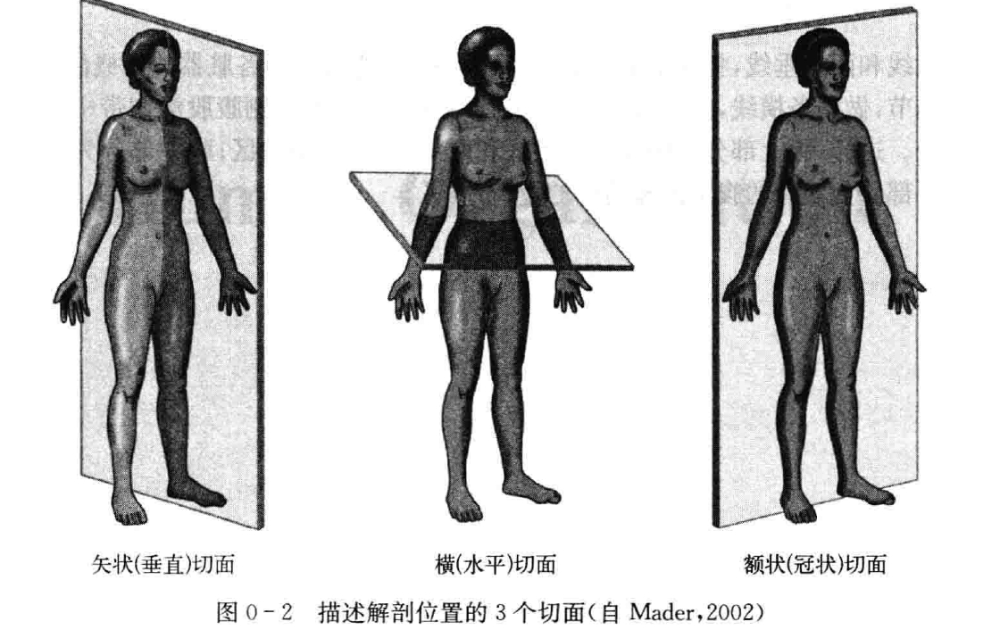

BME | Anatomy - Introduction
Definitions of Anatomy and Physiology
Anatomy: The scientific study of the morphological structure and developmental patterns of various organs and systems in the human body.
Physiology: The scientific study of the functions, mechanisms, principles, and regulatory patterns of various organs and systems in the human body.
Classification of Anatomy
Gross Anatomy + Histology
Levels of Physiological Research
Whole-body level
Organ and system level
Cellular and molecular level
Fundamental Research Methods in Anatomy
Classical Methods: Dissection using surgical instruments, comparison through naked-eye observations
Organ Level: X-rays, CT scans, PET scans, FMRI
Tissue and Cellular Level: Light microscopy, electron microscopy, laser scanning confocal microscopy
Molecular Level: Molecular biology, immunocytochemistry
Classification of Animal Experimental Methods
In vivo experiments, ex vivo experiments (acute - anesthesia, chronic - awake)
Standard Anatomical Position
Human body upright, arms hanging naturally at the sides, palms facing forward, feet together, toes pointing forward, eyes looking straight ahead.
Common Anatomical Terminologies
Directional Terms: Superior and inferior (cranial/caudal), anterior and posterior (ventral/dorsal), internal and external (proximal/distal), superficial and deep (close to skin)
Axes: Vertical axis (superior/inferior), sagittal axis (anterior/posterior), coronal axis (left/right)
Planes: Vertical plane (divides into anterior/posterior), sagittal plane (divides into superior/inferior), coronal plane (divides into anterior/posterior)

Note: The content in this blog consists of class notes, intended for sharing and educational purposes only. Some images and content are sourced from textbooks, teacher materials, and the internet. If there is any infringement, please contact aursus.blog@gmail.com for removal.